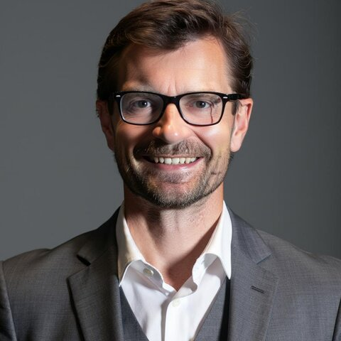

Senior Operators Inside the Room. Zero Outside Theorists.
Every Kuma retreat is personally designed and led by partners who have carried P&L accountability, navigated acute board pressure, and scaled venture-backed companies. That is the entire difference.The Principal Partners
The core operators who lead stakeholder discovery, closed-door debate, and Monday morning compacts.

Dr. Sven Mulfinger
Managing Partner · Kuma PartnersSpecializes in high-stakes C-suite mediation, resolving structural co-founder friction, and aligning multi-stakeholder boards. Translates unexpressed executive conflict into binding 90-day execution compacts.
Farid
Founder & Strategic Designer · NonameyetGuides scale-ups and distributed leadership teams through rapid product innovation, GTM stress-testing, and cultural design. Creates high-tempo environments that turn abstract strategy into tangible roadmaps.
Luisa Ábalo
Executive Leadership Chair · Kuma PartnersSpecializes in enterprise governance, organizational scaling architecture, and CEO peer dynamics. Drives operational discipline and team cohesion across high-growth international executive cohorts.
Vincent Azé
Managing Partner · Commercial Strategy & ExecutionFormer CRO at Glownet and Sales Director at FIS. Directs commercial diagnostics and GTM alignment sprints during offsites, bridging high-level board revenue targets with practical sales cadences teams execute Monday morning.
Specialist Practice Leads
Deployed engagement-by-engagement to co-lead functional breakouts, deep technical alignment, or specialized psychological diagnostics during scaled offsites.
Andrea Ross
Executive Offsites & Systemic Alignment20+ years designing and moderating high-impact leadership offsites for tech scale-ups, unlocking executive trust and operational focus.
Tiffany Missiha
Board Advisory & Business PsychologyICF-accredited consultant guiding leadership through interpersonal friction, executive restructuring, and complex talent transitions.
Daniel Pascual
Structural Velocity & Neuro-LeadershipFormer CEO specializing in dismantling structural drag and corporate bottlenecks under pressure through agentic governance.
Bree Aesie
Executive Narrative & Strategic StoryAdvises leadership teams on strategic narrative, board-level communication, and internal alignment during high-stakes growth phases.
Márcio Marcos
Leadership & Culture Transformation25+ years advising founders, executive teams, and boards through complex organizational restructuring and critical growth inflection points.
Bryan Kramer
High-Trust Culture ArchitectureSeasoned sounding board helping executive leaders navigate strategic inflection points, eliminate political drag, and build high accountability.
AI Cannot Solve In-Room Human Friction.
We build with, deploy, and stress-test AI systems every day. We know software can simulate market scenarios, optimize workflow architecture, and draft strategic roadmaps in seconds.
What code cannot do is sit across an open-fire hearth with two co-founders who have stopped speaking candidly, navigate the political fracture of a Series B inflection, or align an executive committee under acute board pressure.
We don't advise from academic distance or hide behind slide decks. We embed directly inside the room to resolve the human friction and operational drag that technology alone will never fix.
Ready to Plan Your Closed-Door Offsite?
Every engagement is directly shaped by our managing partners. Tell us your cohort size, target dates, and core strategic bottleneck.